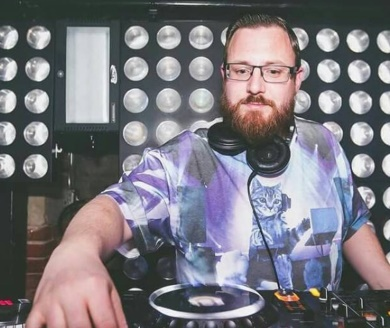
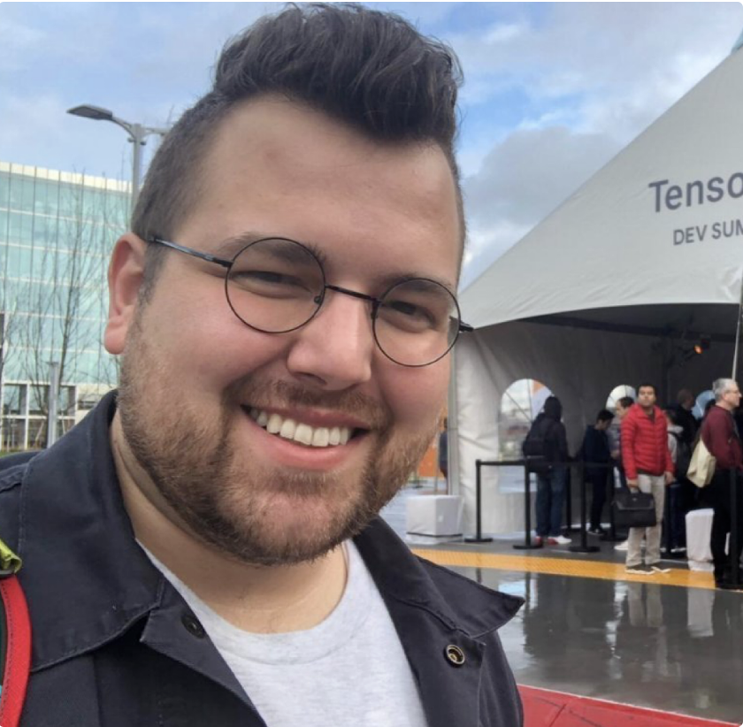
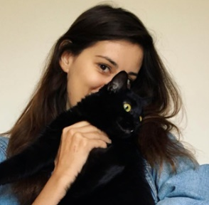

Sam
Kevin
Daniel
Ivana
Britton
Ed
Joe

Sam Rodriguez
Sam is a Lambda student with a couple years of computer science background from New Mexico Institute of Mining and Technology. When I am not making websites I enjoy playing video games
and guitar. On the weekends I work as a Home Inspector/Handyman. Also I am not a Troll.

Kevin Brack
Kevin is a full stack developer nearing the completion of his training at Lambda School. As team lead he assisted in all aspects of design and problem solving, during the production
phase of this application. He is strong with dev ops, front end, back end, and styling in general. He really enjoyed the challenges associated with tying the python code provided by data
scientists into the full stack application.

Britton Winterrose
NEEDS TO BE FILLED
Daniel Starling
Daniel started his career as a bartender which taught him how to adapt quickly and work on a team. He eventually became the Operations Manager at the bar he worked. Through this he gained a lot of
experience in being in charge of organizing and bringing many moving pieces together. His natural draw towards technology and problem solving led him to coding as he was looking to
transition out of the hospitality industry. This led him to start scraping websites with python which is where he truly realized the power of coding. This is also where he started his Open
source work that would land him an Engineering Intern role at a nonprofit of over 3,000 members. This accelerated his path in learning how to bring the ideas he has to life to make a
difference.
Ed Chin
NEEDS TO BE FILLED

Ivana Huckova
Ivana is a current Lambda School student, who loves coding. Besides that, she truly enjoyes skiing, hiking, walking out dogs from dog-shelter (as unfortunately she doesn’t have her own dog), reading (currently it is mostly Eloquent
Javascript), riding Xiaomi scooter and listnening Masters of Scale and checking out beautiful new projects and products on Producthunt.
Joe Bacus
Joe is an IT graduate who is developing his skills as a full stack developer in Lambda School. Ever-thirsty for more knowledge, he likes to explore the field of coding and enjoys challenges that involve programming logic. Along with these, he also has film viewing, video gaming and playing music among his hobbies.